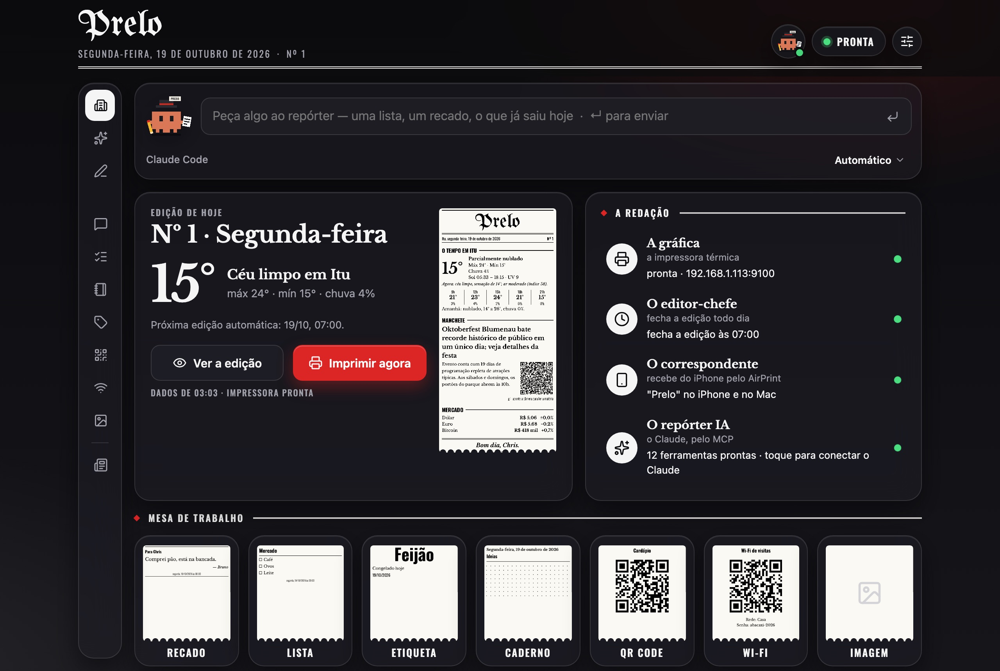

Jornal do dia
Clima da sua cidade, tarefas e agenda do Home Assistant, notícias dos feeds que você escolher, mercado e almanaque. Sai sozinho na hora marcada.
A impressora térmica da casa
Uma impressora de cupom vira a gráfica de casa: um jornalzinho todo dia, recados na bancada, a lista do mercado, etiquetas para os potes. Do Mac, do iPhone e do Claude.

O que ele imprime
Clima da sua cidade, tarefas e agenda do Home Assistant, notícias dos feeds que você escolher, mercado e almanaque. Sai sozinho na hora marcada.
Um bilhete para quem chega, a lista do mercado com caixinhas, páginas pautadas ou quadriculadas do tamanho que precisar.
Texto grande com a data para o pote do congelador, QR code com legenda, o Wi-Fi de visitas pronto para escanear.
Fotos saem pontilhadas (Floyd–Steinberg), com margens cortadas e clareadas para não borrar o papel. Pela tela, pelo iPhone, pelo Claude.
Monte a peça do seu jeito: texto, imagens, QR, formas, modelos salvos. Prévia térmica de verdade antes de imprimir.
A redação mostra o que está saindo, o que espera e o que já saiu — venha do app, do iPhone, do Claude ou da agenda.

Repórter IA
Um repórter movido a Claude mora na Redação: monta a peça, mostra a prévia e manda imprimir. Nada sai sem você aprovar na tela.
Experimente
A prévia aqui é uma imitação em HTML da diagramação do Prelo — no app, ela é a imagem exata que vai para a impressora.
De onde
A interface roda no navegador do Mac, do iPhone ou de qualquer aparelho da casa. Na Tela de Início do iPhone ela abre em tela cheia, como um app.
O Prelo se anuncia como impressora na rede de casa. Qualquer app que imprime, imprime no Prelo: uma foto, um PDF, uma página, um texto do Notas.
O Prelo tem um servidor MCP embutido. Conectado ao Claude Code ou ao Claude Desktop, ele vira o repórter da casa.
O app
Capturas do app como ele é, em português e em inglês — troque o idioma no menu.

Como roda
Instalar no Mac
.dmgBotão acima (Apple Silicon). As versões anteriores ficam na lista abaixo.No iPhone
O Prelo do iPhone usa o Mac como hub. Sem loja: a AltStore instala e mantém o app assinado com o seu Apple ID, e o AltServer no Mac renova sozinho.
https://preloprinter.github.io/altstore.json
Versões
O app se atualiza sozinho; se precisar de uma versão anterior, ela continua disponível.
buscando as versões…